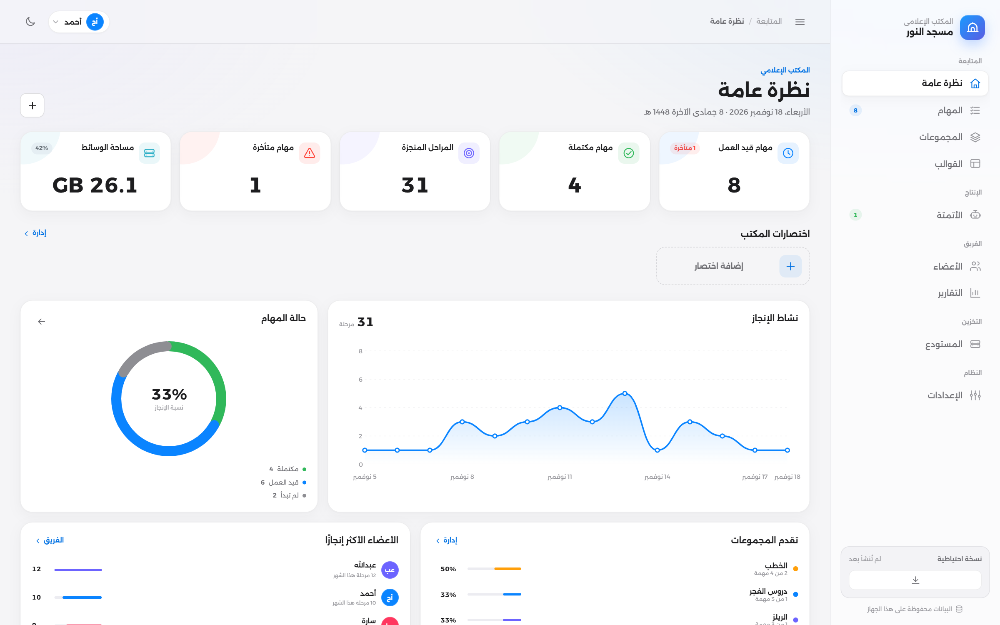
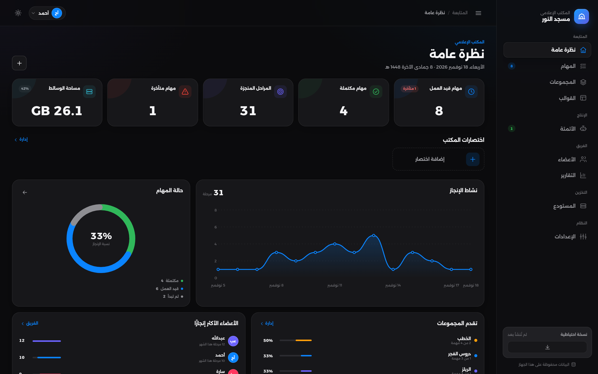
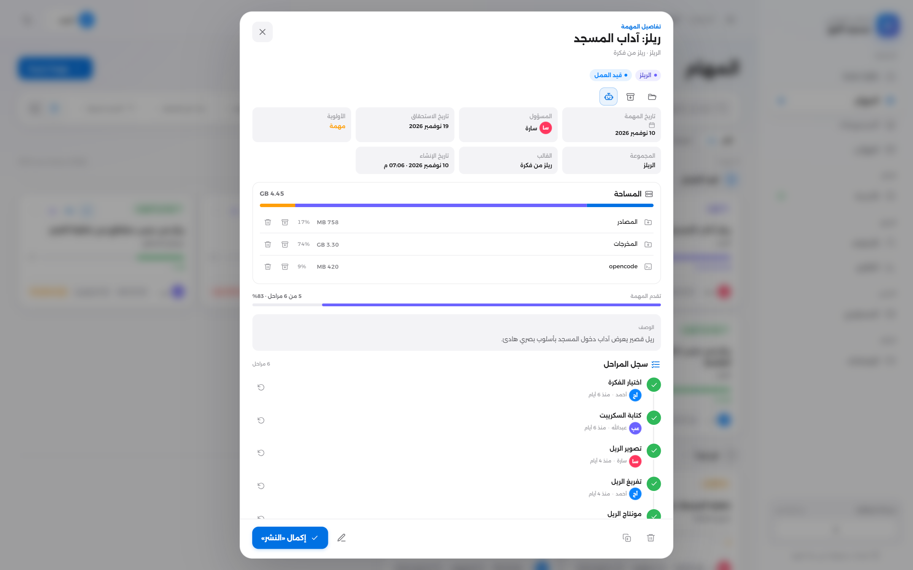
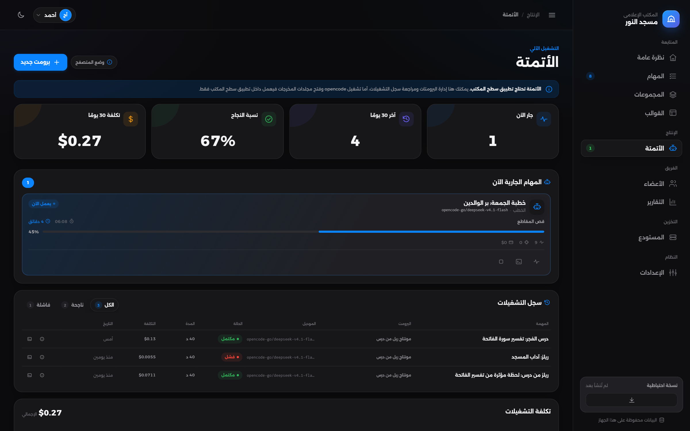
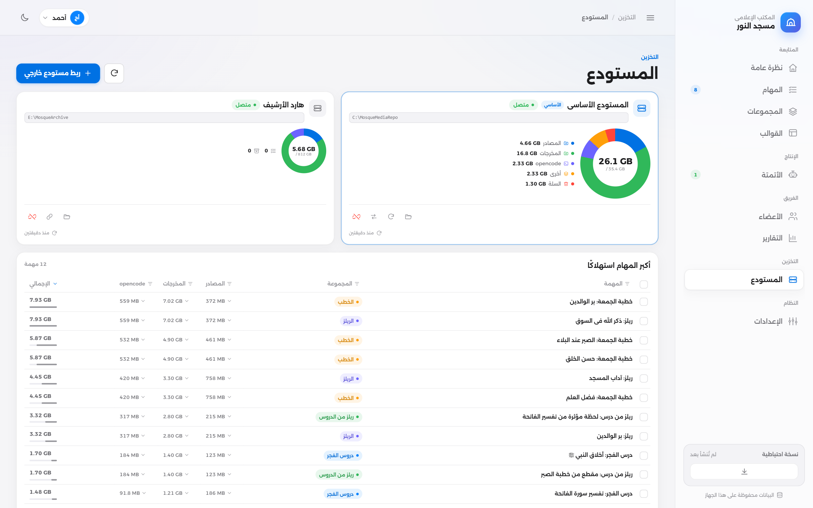
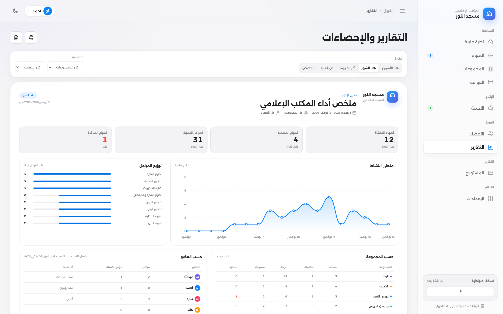
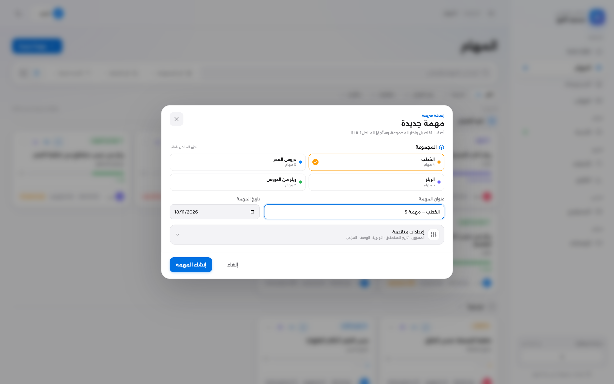
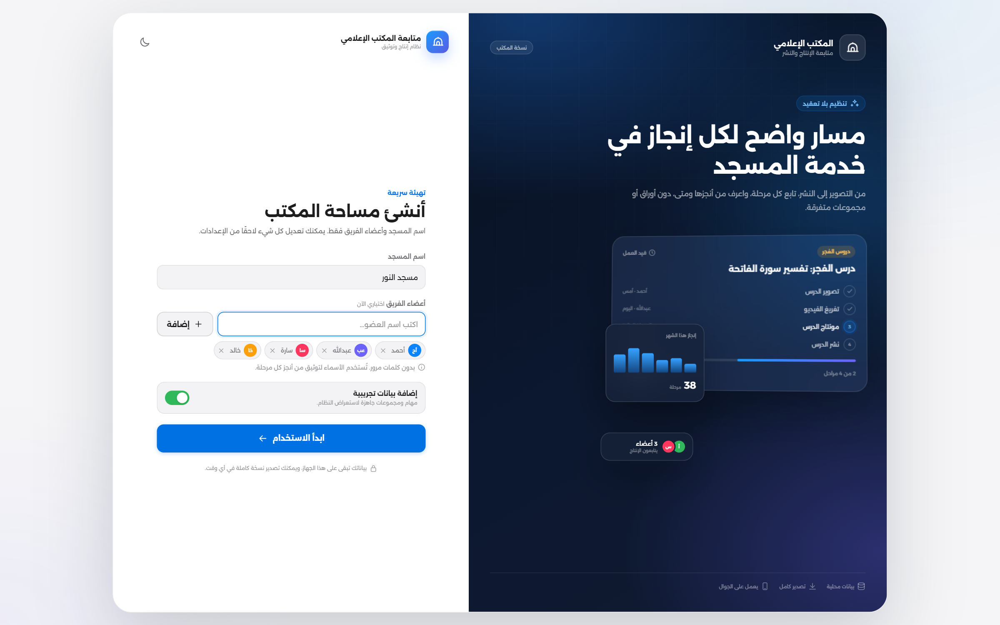

لأن الخطبة لا تنتظر أن يتذكّر أحد.
مرحلة لها مسؤول، وموعد، وسجل. التأخير يظهر قبل أن يصبح أزمة، والخطبة القادمة لا تعتمد على ذاكرة شخص واحد.
نظام متابعة المكتب الإعلامي
نظام واحد يجمع مهام المكتب الإعلامي ومراحلها وفريقها وملفاتها وأتمتتها. كل خطوة تُسجَّل، وكل ملف له مكان، وكل تقرير جاهز قبل أن يُطلب.

لقطة من النظام — البيانات المعروضة تجريبية.
المكتب الإعلامي ينتج كثيرًا: خطب، دروس، ريلز، أغلفة، ومنشورات. لكن أين تُحفظ النسخة الأخيرة؟ من أنجز المونتاج؟ ماذا نُشر؟ ومتى امتلأ الهارد؟
العمل موجود.
الذاكرة هي الغائبة.
أي نسخة؟ في أي محادثة؟ ومن عدّلها آخر مرة؟
سؤال يتكرر كل أسبوع، والإجابة في ذاكرة شخص واحد.
بين التصميم والنشر ثلاث محادثات، ولا حالة واحدة واضحة.
لا نعرف أي مهمة أخذت المساحة، ولا ما يمكن أرشفته بأمان.
النظام لا يضيف إدارة فوق عملك؛ بل يسجّل العمل نفسه: المهمة، مرحلتها، من أنجزها، ملفاتها، وتكلفة تشغيلها. كل شيء يبقى في سياقه.

أرقام من البيانات التجريبية الظاهرة في اللقطة — ليست إحصاءات المكتب.
مسؤول المهمة: سارة · الاستحقاق: ١٨ نوفمبر
عرض تفاعلي مبني على مراحل النظام — الاسم والتاريخ يُسجَّلان عند كل إنجاز.
كل مهمة تمشي في مراحل يعرّفها قالب مجموعتها. عند إنجاز أي مرحلة يُسجَّل الاسم والتاريخ، وتظل المرحلة التالية واضحة للجميع.

لقطة من نافذة المهمة داخل النظام.
مجموعة لكل خط إنتاج: الخطب، دروس الفجر، الريلز، وريلز من الدروس. القالب يضمن ألا تُنسى مرحلة، والمجموعة تجمع كل ما يخص الحدث نفسه.
قالب المجموعة
إنتاج وتوثيق خطب الجمعة.
تعديل القالب يغيّر المهام الجديدة فقط؛ المهمة التي بدأت تحتفظ بمراحلها الأصلية حتى تنتهي.
اربط opencode بالمهمة، اختر البرومت والموديل، ثم تابع المرحلة والنسبة والوقت والتكلفة لحظة بلحظة. النتائج في output، والعمل التقني في opencode.
المهمة: ريل آداب المسجد · الموديل: deepseek-v4.1-flash

شاشة الأتمتة داخل النظام — بيانات تجريبية.
لكل مجموعة مجلد، ولكل مهمة مجلد: المصادر، المخرجات، وopencode. الأرشفة إلى هارد خارجي لا تحذف شيئًا قبل التحقق من كل ملف بـSHA-256، وسلة المحذوفات تعيد ما حُذف خلال سبعة أيام.

7.02 GB · 42 ملفًا → هارد الأرشيف
لا يُحذف المصدر قبل مطابقة بصمة كل ملف وكتابة الإيصال.

تقارير حسب الفترة والمجموعة والعضو: ما أُنجز، ما تأخر، من حمل الحمل الأكبر، وكم كلّفت الأتمتة. تُصدَّر إلى Excel أو JSON، وتُستورد على جهاز آخر.
أرقام اللقطة من البيانات التجريبية.
لأن العمل الإعلامي لا يُقاس بالنيّة، بل بما وصل.
مرحلة لها مسؤول، وموعد، وسجل. التأخير يظهر قبل أن يصبح أزمة، والخطبة القادمة لا تعتمد على ذاكرة شخص واحد.
ملفاتك على قرصك، بأرشفة متحقق منها، وسلة تعيد ما حُذف بالخطأ. لا مساحة تضيع بلا سبب، ولا نسخة تُفقد بلا رجعة.
الإجابة على الشاشة: من صوّر، من عدّل، ماذا نُشر، وأين الملف. سؤال واحد أقل في كل مهمة يعني وقتًا يعود للإنتاج.
كل تشغيل مسجّل بالتوكنز والتكلفة، ولكل مجموعة وموديل رقمه. تجرّب بثقة، وتوقف عندما تتجاوز الحد.
النظام لا يزيد العمل.
يمنع العمل من أن يضيع.
لا تحتاج إلى تدريب طويل. ابدأ من الشاشة، وأنهِ عند المرحلة. هذه ست لحظات يتكرر فيها النظام كل أسبوع، من أول مهمة إلى آخر أرشيف.
افتح «مهام تنتظرك» واعرف مرحلتك التالية. إن لم تكن هناك مهمة مسندة إليك، اختر مهمة قريبة الموعد من «مهام قيد المتابعة».
نظرة عامة ← مهام تنتظركاختر المجموعة أولًا ليُطبَّق قالبها، ثم اكتب العنوان والتاريخ والمسؤول. أضف الوصف والموعد والأولوية من الإعدادات المتقدمة عند الحاجة.
المهام ← إضافة مهمة
افتح المهمة، اضغط «إكمال» على مرحلتك، واكتب ملاحظة قصيرة. ضع الملفات في مجلد المهمة: المصادر في الجذر، والمخرجات في output.
المهمة ← المرحلة الحالية ← إكمالتأكد أن كل المراحل السابقة مكتملة. بعد النشر علّم «النشر» — فتصبح المهمة مكتملة وتظهر في التقارير فورًا.
المهمة ← آخر مرحلةراجع «متأخرة» و«قرب الموعد». أعد ترتيب الأولويات، وأضف ملاحظة لأي مهمة ستحتاج متابعة صباحًا.
المهام ← متأخرةصدّر تقرير Excel للاجتماع، وأرشف مهام الشهر المنتهية إلى الهارد الخارجي. تأكد من النسخة الاحتياطية قبل أي تنظيف.
التقارير ← تصدير · المستودع ← أرشفةخمس خطوات، مرة واحدة. بعدها يصبح النظام جزءًا من الروتين، لا مهمة إضافية.

استخدم مثبّت Windows أو النسخة المحمولة. لا تحتاج إنترنت للعمل اليومي، ولا حسابًا ولا اشتراكًا.
اسم المسجد وأسماء الفريق. الأعضاء بلا كلمات مرور؛ الاسم وحده يكفي لتوثيق الإنجاز.
فعّل البيانات التجريبية، جرّب مهمة كاملة وتقريرًا، ثم امسحها من الإعدادات عندما تبدأ بالبيانات الحقيقية.
من الإعدادات ← المستودع، اختر مجلدًا على القرص. سينشئ النظام مجلدًا لكل مجموعة ومهمة، ويحفظ فهرسًا للربط.
اختر المجموعة ليُطبَّق قالبها، وحدد التاريخ والمسؤول. من هنا يبدأ كل شيء: المرحلة، الملف، والتقرير.
كل ما تحتاجه اليوم موجود في الشاشة الأولى: مهامك، مرحلتك التالية، وملفاتك. والباقي يُبنى مرة واحدة، ثم يعمل من أجلك.
الإصدار 2.2.2 · بيانات محلية · لا حساب ولا اشتراك.